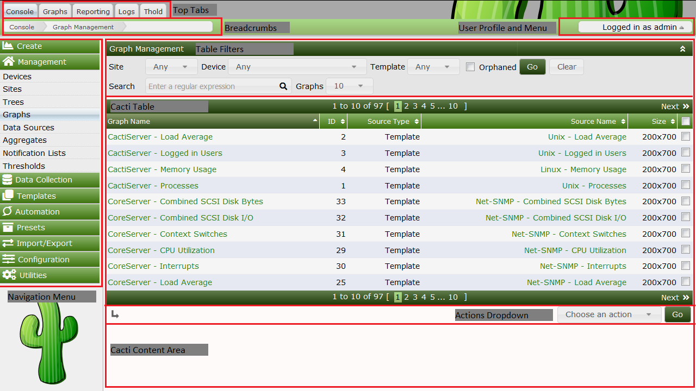

The Cacti User Interface is visually broken into multiple sections. Each major section is navigated to by clicking on a Top Tab. By default, Cacti has four major sections called Console, Graphs, Reporting and Logs, though Administrators can add additional Top Tab sections through both installing and enabling Plugins or by adding External Links to Cacti.
Inside each of these sections, the page is broken into sub-sections. These Subsections include the Navigation Area and the Content Area.
All pages include a Breadcrumb area a User Profile and Menu area, and in some themes a Footer area is also included. Additionally, in some Themes the Breadcrumb area is hidden.
To use Cacti properly, you should first understand these sections. We will start by describing the Cacti Console.
The image below is of the Cacti Console. From the Cacti Console, we can see many of Cacti's User Interface areas.
Top Tabs
Cacti Top Tabs provide Cacti with multiple Navigation Areas. By default, Cacti includes four Top Tabs. They are Console, Graphs, Log and Reports.
Breadcrumbs
Breadcrumbs appear directly below the Top Tabs. Note that some Cacti Themes disable the Breadcrumbs. You can click on a Breadcrumb area to navigate to that area if desired.
Cacti Content Area
This is where the main page content will be displayed. It is directly below the Breadcrumbs or the Top Tabs with some Cacti Themes. They can include any HTML that the Plugin Author or Cacti Administrator desires in the case of External Links.
Navigation Menu
If you click on the Cacti Console, you will see an example Navigation Menu. These menus can appear on any Plugin based Top Tab page in addition to the Cacti Console.
Cacti Tables
These tables are where table based data is rendered in Cacti. Cacti Tables are presented using an arcane, though easy to use API.
Table Filters
Any Cacti Table can include a Table Filters. These filters can be used to limit the data returned to a Cacti Table.
Actions Dropdown
Any page that includes a Cacti Table will generally include an Actions Dropdown. These Actions Dropdown menus allow you to take action on a table row or rows.
User Profile and Menu
This is where a Cacti User can edit their profile, change their password, logout, or find links to other Cacti information and support.

Normal users, such as the Cacti Guest account should not have access to the Cacti Console.
The Cacti Graphs Top Tab is where most Cacti Graphs are viewed. By default, the Cacti Graphs Top Tab includes three distinct views. They include:
Tree View
Allows Cacti Users to view Graphs in the form of hierarchical Trees. These Trees are generally constructed by the Cacti Administrator and are controlled either at the User or User Group level.
Preview View
The Preview View provides a view of all Graphs that a Cacti User has access to. Table Filters are provided to constrain the list of Graphs returned to the page.
List View
The List View allows the Cacti user to Create their own Preview Page by allowing them to select graphs from various pages, and then finally view those pages from the Preview View.
In the example Tree View page below, you can see the Tree Navigation Area to the left, and in the Cacti Content Area, you can see the Graphs and a Table Filter area for constraining the list of Graphs returned. You can Search the Tree View from the Search area above the Tree Navigation Area.
Copyright (c) 2004-2020 The Cacti Group